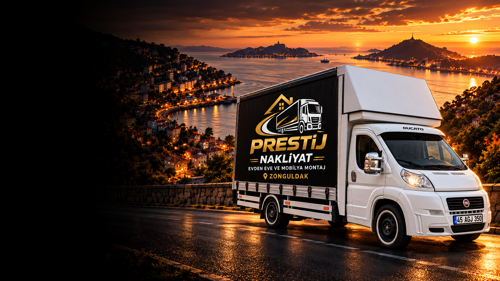

ZONGULDAK · ÇAYCUMA
ÇaycumaEvden EveNakliyat
Çaycuma merkez, Filyos ve çevre köylerde ev ve ofis taşımalarınızı ücretsiz keşifle planlıyoruz.
- %100Güvenli Taşıma
- ProfesyonelEkip
- ÜcretsizKeşif
- SigortalıTaşıma
ÇAYCUMA EVDEN EVE NAKLİYAT
Prestij Nakliyat, Çaycuma’da ve Filyos başta olmak üzere ilçenin mahalle ve köylerinde evden eve nakliyat, ofis taşımacılığı, paketleme, mobilya montajı ve asansörlü taşıma hizmeti verir.
Filyos Çayı boyunca uzanan Çaycuma; ilçe merkezi, Filyos kıyısı ve çevre köyleriyle geniş bir alana yayılır. Adresler arası mesafe arttıkça planlama önem kazandığı için eşyaları güvenle taşıyacak araç ve ekip düzenini keşifte belirliyoruz. Çaycuma’dan Zonguldak merkeze, Gökçebey’e, Devrek’e veya Ereğli’ye taşınmalarda da hizmet veriyoruz.
Fiyat; eşya miktarına, iki adresin kat ve bina durumuna, asansör ve paketleme ihtiyacına ve adresler arasındaki mesafeye göre belirlenir. Ücretsiz keşifte eşyalarınızı yerinde görerek size net bir fiyat veriyoruz.
Evet. Çaycuma merkezinin yanı sıra Filyos ve çevre köylerdeki adreslere de taşıma yapıyoruz. Adresinizi ve eşya bilgilerinizi paylaştığınızda uygun planı birlikte çıkarıyoruz.
Evet. Zonguldak merkeze, Gökçebey, Devrek, Ereğli ve diğer ilçelere taşınmalarda hizmet veriyoruz; fiyatı mesafe ve eşya miktarına göre keşifte netleştiriyoruz.
ÜCRETSİZ KEŞİF
Ekibimiz adresinize gelip eşyalarınızı yerinde görür; size özel taşıma planını ve net fiyatı çıkarır.